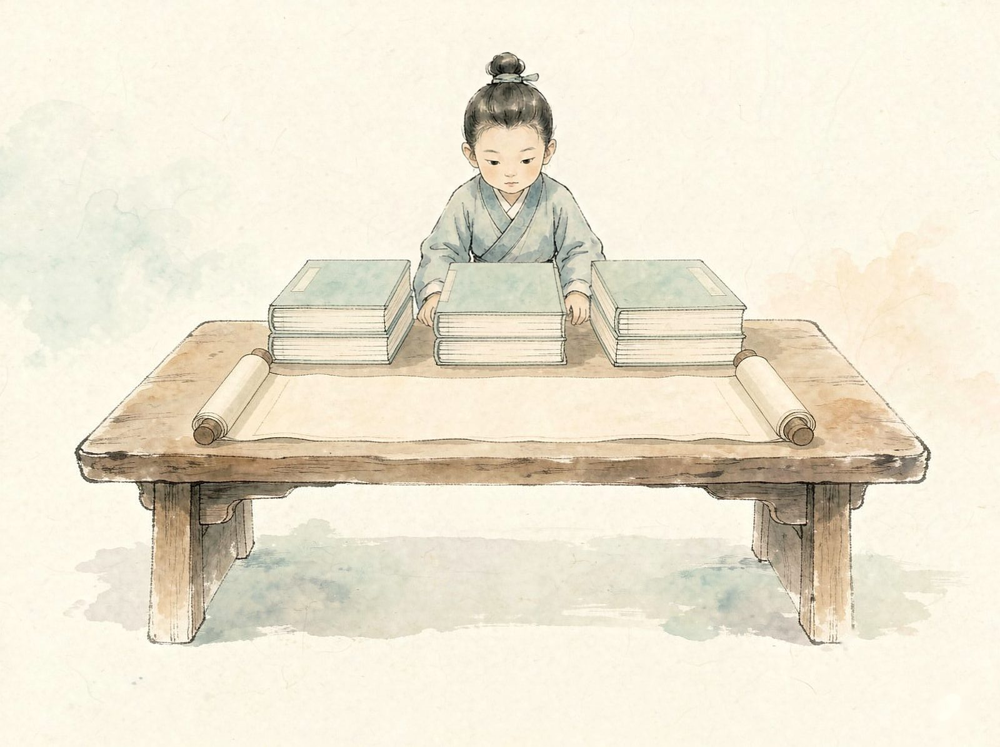
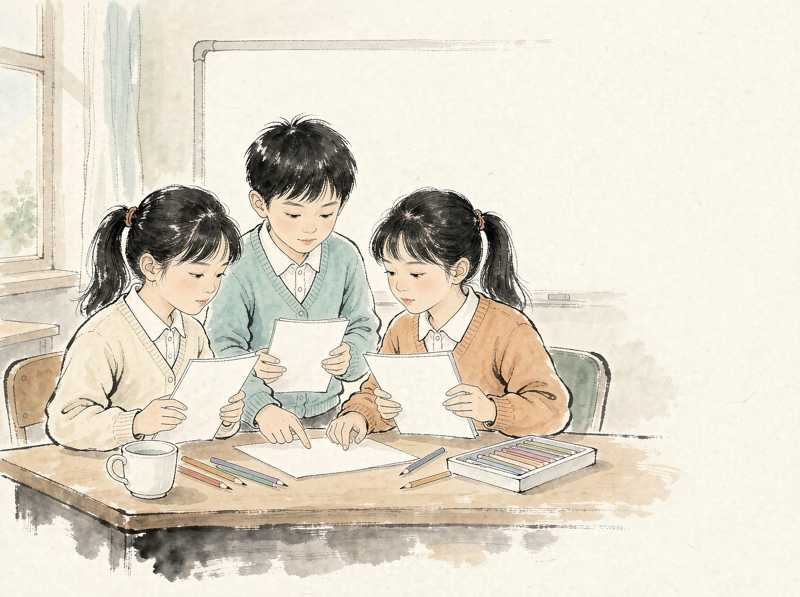

《春秋》经文简短深奥，后人作三部传文来解读它，称为三传，第一部便是《公羊传》。
公羊之学重在探明大义，明白圣人褒贬取舍、拨乱归正的本心。
注解是桥梁，目的是读懂经文，守住中正的准则。

《春秋》三传，除公羊之外，还有《左传》与《谷梁传》。
左传多记录完整故事，看清事情的来龙去脉；
谷梁仔细斟酌文字，分辨名分、守住分寸。
三家注解互为参照，帮助我们周全地读懂经文，不偏执单一角度。

落到心上理解
承接上一课存疑：经文微言隐晦，各人解读不一，容易主观臆断。
三传，就是古人搭建的参照标尺，公羊是其中一条路径。
但要分清主次：经文是本源，传是向导。向导的解说，是为了带你看见经文里面的中正之义，向导的话不等于道本身。
对应修心：各类教法、注解、善知识开示，如同传。可以拿来参照、校准心念，但不能把某一家言说死死当成唯一标准。依义不依语，明取舍、守中正，而不困在注解文字里，便是无住。
另有一问：三家义理不同，阅读如何权衡取舍。
三传并存，本身就是示范一种修行方式：多角度参照，而不孤守一个视角。
公羊教我们立定大方向、守住根本宗旨；左传提醒我们，所有是非评判，都不能脱离真实的人事背景；谷梁教我们在细微之处审慎，不粗疏、不武断。
放在心上用功：我们觉察心念、判断取舍，既要有坚定的根本准则（公羊），也要看清因缘处境、前因后果（左氏），还要在起心动念的细微处审察分寸（谷梁）。多方参照，明断而不武断，广博而不迷失根本，即是无住。
以传代经，把公羊说法等同于圣人本意；独尊一传，排斥另外两家
传是解经的津梁，经文才是根本；三传各有所长，宜互参互补
一、勘俗见。别人的解读、参考资料是帮我们理解原文，不能直接当成原文本身。看待一件事，可以多听不同角度的说法，但是要有自己稳定的是非底线。
二、现代对照。如同解析文章的导读，导读帮你读懂正文，但导读不等于正文。如同看待一件纠纷，既听完整经过，也看细微分寸，同时守住大原则。
三、承接常变主线。守正的本心恒常不变（常）；各家传注、解读视角，是帮助理解的方便（可变之相）。守正的本心恒常不变（常）；三家传注、解读视角，是辅助理解的方便（可变之相）。
四、承接教与学二分。师长区分经文与传注的主次，引导依经明义，属于施教一侧；学人参考传文，反观自心，择善而从，是自主修习。师长讲清三家侧重点，引导对比参读，属于施教一侧；学人博观众说，反观自心，择善而取，是自主修习。
承接选择力练习：传以通经，依义不依文。
字义与句读
三传：解释《春秋》的三部传书，公羊、谷梁、左氏；公羊：公羊高，《公羊传》的开创者，此传偏重阐发经文背后的义理法度、改制大义。
上句释义：疏通《春秋》经文，有三部传书，其一便是《公羊传》，专推明圣人微言大义、拨乱反正之旨。
左氏：左丘明，《左传》；谷梁：谷梁赤，《谷梁传》。三传分工：公羊明大义改制，左氏述事载史，谷梁审名分、裁断细微辞旨。
下句释义：《春秋》三传，除《公羊传》之外，又有《左传》、《谷梁传》，三家各持路径，一同疏通经文微言，供学人对照参究。
二命题考辨
（1）经与传的关系
《春秋》经文极简，常常一句话，背后藏一代褒贬法度，初学者很难直读契入。若无传，很容易望文生义，随意附会。
公羊一路，和左传、谷梁有清晰分野：
《左传》偏重于补充史实，把事件的来龙去脉交代清楚；
《公羊传》不重在铺陈故事，重在提炼义法：大一统、尊王、夷夏之辨、经权、拨乱反正。它关心的不是“发生了什么”，而是这件事里，圣人要给后世立下什么法度。
这也是本课的重点：公羊是义理之传。
（2）对照当下现代语境
我们学习经典，很容易两种偏失：一是盲从注解，人云亦云；二是轻视古注，完全自我发挥。
“三传者，有公羊”提示中道：注解是重要参考，降低误读风险；同时注解只是路标，最终要回归经文本身的义理，以本心的中正去印证。
很多人的思维容易单向化：要么执着宏大理念，不顾现实人情复杂；要么只看故事细节，失去根本原则；又或者拘泥细枝末节，格局狭隘。
三传并存，给出一个平衡模型：心中有根本宗旨，眼中有现实因缘，念中有细微分寸。
（3）般若范式互参
传注言说，是标月之指。
诸家传注，是标月之指。
联动三才五蕴太极空杯模型：中正自性是空杯本具之体；公羊传、各家注解，都是指月的手指。看手指是为了看见月亮，不可把手指当成月亮本身。中正自性是空杯本具之体；公羊、左氏、谷梁三家言说，是三种不同指向的指月之手。手不同，指向的月亮是同一个，不可执一手为唯一。
呼应“本乎数”：经为一，传分三，一体多解。一经而三解，一体三用。
延伸义理：
《金刚经》：依义不依语，正是读传的准则，借言说通达实义，不执着文字。依义不依语，三家都是语言方便，取其义而不困于言说。
《道德经》：道可道非常道，传中所有言说，都是权便开示。多言数穷，不如守中，三传互参，正是守中的读法。
《坛经》：经诵万部，不如明心见性，读传最终要回归自心印证。法门无数，归向一心，诸传异说，同以经义印证本心。
（4）三传格局完整对照
公羊：义理型。着眼大经大法、拨乱反正、大一统、权变之道，面向后世立法。
左氏：史事型。不以抽象义理为先，把经文短短一句背后的人际、邦国、战争、会盟完整铺展，让褒贬落在鲜活的世事之中。脱离实事空谈大义，容易流入空疏。
谷梁：审断型。介于二者之间，字句抠得细，重名位、秩序、边界，警惕越分、僭越，克制、严谨，防止大义在落实时失了分寸。
三者恰好构成一套闭环：立宗旨、见实事、审分寸。
三跨典互参（老庄、般若对照）
· 《道德经》：知人者智，自知者明，读公羊之大义，向外知法度，向内明自心取舍。大成若缺，三传各有长短，互参之后方近周全。
· 《庄子》：吾生也有涯，而知也无涯，提醒我们不要沉溺各家传注的辨析而迷失根本。物无非彼，物无非是，不执一家之是，方能见大道全貌。
· 串联前文：春秋立褒贬之经，三传开疏通之路，公羊首明大义。春秋经文立褒贬之纲，三传分途疏通，公羊、左氏、谷梁合而义备。
四和前面课程的张力
次第链条：……→ 寓褒贬，别善恶 → 三传者，有公羊 → 有左氏，有谷梁
呼应“人不学，不知义”：知经传主次、借传通经之义；知多传互参、博观而有宗主之义；
呼应“玉不琢，不成器”：借公羊大义，打磨自心，明法度而不困于注解；借三家之论，打磨自心，宏大而察细，守义而通事；
呼应“教之道，贵以专”：专守中正，依义不依传注言说。专守中正，遍览诸解而不迷失本心。
五1. 公羊学的“大一统”“夷夏之辨”，如何在今天重新理解，不生封闭对立？
2. 公羊、谷梁、左传三家义理不同，阅读时如何权衡取舍？
3. 三传讲毕之后，如何转入《礼经》，收束六经体系？
4. 三传讲毕，如何转入《礼经》，收束六经的教化闭环？
5. 礼有周礼、仪礼、礼记，三者如何定位，承接前面诗、春秋刚柔之教？